Special Notes on Jun. 05, 2018
| Date: | Jun 5, 2018 |
|---|---|
| Last Updated: | Jun 14, 2018 |
| Categories: | |
| Tags: |

Contents
Introduction
The baseline of this work is existing asynchronous SGD algorithms including Hogwild, SVRG and SAGA. The author summarize the work as
General composite optimization problem:
\begin{equation} \begin{aligned} \arg \min\limits_{\mathbf{x} \in \mathbb{R}^p} & f(\mathbf{x}) + h(\mathbf{x}),\\[5pt] \mathrm{s.t.}~&f(\mathbf{x}) := \frac{1}{n} \sum_{i=1}^n f_i(\mathbf{x}), \end{aligned} \end{equation}where each $f_i$ is convex with L-Lipschitz gradient (i.e. L-smooth), and the averaging function is $\mu$-strongly convex. $h$ is convex but potentially non-smooth, and it could be decomposed block coordinate-wise as
\begin{align} h(\mathbf{x}) = \sum_{B \in \mathbb{B}}^n h_B([\mathbf{x}]_{B}), \end{align}where we use $[\mathbf{x}]_{B}$ to represent a block part of the whole input parameters.

Check here to see Lipschitz continuity in Wikipedia.
Check here to see Strongly convex in Wikipedia.
Here we need to introduce some concepts:
- L-smooth: For a function $f$, its gradient at any point would not excess a real constant, which means: $\forall~x,~y,~\exists~L,$ $\lVert \nabla f(x) - \nabla f(y) \rVert \leqslant L \lVert x - y \rVert.$
- $\mu$-strongly convex: For a differentiable function $f$, its ascending rate has a quadric lower bound, which means: $\forall~x,~y,$ $f(y) - f(x) \geqslant \nabla f(x)^T(y-x) + \frac{\mu}{2} \lVert y - x \rVert^2_2.$
The author propose a Sparse Proximal SAGA algorithm based on the original SAGA. Furthermore, a lock-free asynchronous parallel version named PROXASAGA has been proposed.
Considering the article is long, we would introduce it in two notes. This is the first note. To learn more about this article, we could refer to “Breaking the Nonsmooth Barrier: A Scalable Parallel Method for Composite Optimization“:
Some basic theories are introduced in this book, “Introductory Lectures on Convex Programming, Volume I: Basic course“:
Some baseline algorithms, like SAGA, are introduced here, “Optimization Methods for Large-Scale Machine Learning“:
Lemma derivation
In this part we introduce some proofs of lemmas that are discussed in Appendix A of the paper where the detaill proofs are not given. Some of this part may be very tricky .
We would like to introduce this book which may be helpful for us to understand some proofs and basic theories: "Introductory lectures on convex optimization".
Basic definition
The symbols we use in the following parts are introduced here:
| Symbol | Description |
|---|---|
| $\mathbb{R}^p$ | A $p$ dimensional real space. |
| $\mathbf{x},~\mathbf{y}$ | Input vectors which may be decomposed as a series of parts. Note that $\mathbf{x},~\mathbf{y} \in \mathbb{R}^p$. |
| $B$ | A block, i.e. a part of indices of a input vector. |
| $T$ | A set of blocks, i.e. $T := \{B_1,~B_2,~B_3,\ldots\}$. |
| $[x]_B,~[x]_T$ | A part of the original vector, which is determined by a block $B$ or multiple blocks $T$. |
| $f(\mathbf{x})$ | A function which only has one output value, but it accepts vectors as input. |
| $\nabla f(\mathbf{x})$ | The first-order gradient of $f$ at $\mathbf{x}$. Note that this is a vector since $\mathbf{x}$ is a vector. We could also rewrite it as $\left. \frac{\partial f(\mathbf{z})}{\partial \mathbf{z}} \right|_{\mathbf{z}=\mathbf{x}}$ or $f’(\mathbf{x})$. |
| $\mathbf{x}^T \mathbf{y}$ | The elemental wise product, or the inner product between two vectors. Somewhere it is represented as $\langle \mathbf{x},~\mathbf{y} \rangle$. |
| $\delta(\mathrm{cond})$ | A characteristic function which comes from the Dirac delta function, i.e. $\delta(\mathrm{cond}) = 1$ when $\mathrm{cond}$ is fulfilled otherwise it would be $0$. |
| $\mathrm{prox}_f(\mathbf{x})$ | The proximal operator over a function $f$. This operator is defined as $\arg \min\limits_{\mathbf{z}} f(\mathbf{z}) + \frac{1}{2} \lVert \mathbf{x} - \mathbf{z} \rVert^2$. |
| $\mathrm{B}_f(\mathbf{x},~\mathbf{y})$ | The Bregman divergence associated with a convex function $f$ for points $\mathbf{x},~\mathbf{y}$. It is defined as $f(\mathbf{x}) - f(\mathbf{y}) - \nabla f(\mathbf{y})^T (\mathbf{x} - \mathbf{y})$. |
| $\mathbb{E}$ | The expectation operator. |
Basic properties
Lemma 1
$\mu$-strongly convex inequality:
If $f$ is a $\mu$-strongly function, then we have
\begin{align} (\nabla f(\mathbf{y}) - \nabla f(\mathbf{x}))^T(\mathbf{y} - \mathbf{x}) \geqslant \frac{\mu}{2} \lVert \mathbf{y} - \mathbf{x} \rVert^2 + \mathrm{B}_f(\mathbf{x},~\mathbf{y}). \end{align}
proof:
According to the definition, we have
Lemma 2
Norm boundary of L-smooth gradient:
Consider we have a group of functions $f_i$ which is a convex and has L-smooth gradient, then we have
\begin{align} \frac{1}{n} \sum_{i=1}^n \lVert \nabla f_i(\mathbf{x}) - \nabla f_i(\mathbf{y}) \rVert^2 \leqslant 2L \mathrm{B}_f(\mathbf{x},~\mathbf{y}), \end{align}where $f(\mathbf{x})=\frac{1}{n}\sum\limits^n_{i=1} f_i(\mathbf{x})$.
proof:
This proof could be equivalent to consider each $f_i$, i.e. we only need to prove that
To prove this lemma, we need a lot of works to do. In fact, this lemma requires us to derive the lower bound of $\mathrm{B}_{f_i}$, however, to get the lower bound, we need to to get the upper bound firstly.
Upper bound of Bregman divergence
According to the definition, we have
Considering the definition of the convex function, we would know that $f(\mathbf{y}) - f(\mathbf{x}) \geqslant \nabla f(\mathbf{x})^T (\mathbf{y} - \mathbf{x})$ always holds. Thus we have
Lower bound of Bregman divergence
$\forall~\mathbf{x},~\mathbf{y}$, we could define a convex function that
Note that for $\phi(\mathbf{y})$, although we could choose an arbitrary $\mathbf{x}$, $\mathbf{x}$ is a fixed point. To prove that this function is convex, we could calculate the gradient that
Hence we know that because $f$ is convex and $\mathbf{x}$ is fixed, this gradient is just a real value shifted gradient of $f$, which means $\phi$ has the same monotonicity with $f$. And only when $\mathbf{y} = \mathbf{x}$, we could have $\nabla \phi (\mathbf{x}) = 0$, i.e. $\mathbf{x}$ is the optimal point of $\phi$.
Therefore, $\forall~\mathbf{x},~\mathbf{y}$, defining $\mathbf{a} := \frac{1}{L} \nabla \phi(\mathbf{y})$, then we have
Thus we have
Since we use arbitrary $\mathbf{x}$ and $\mathbf{y}$ here, we could exchange them and use $f_i$ to replace the $f$ in the above equation, then we could get $\eqref{fml:lem:bflbound}$, which gives the lower bound of $\mathrm{B}_f$.
Lemma 3
Characterization of the proximal operator:
The proximal operator has a characterization of such a form:
\begin{align} \mathbf{z} = \mathrm{prox}_{\gamma h}(\mathbf{x}) \Longleftrightarrow \frac{1}{\gamma} (\mathbf{x} - \mathbf{z}) = \nabla h(\mathbf{z}) \in \partial h(\mathbf{z}). \end{align}
proof:
According to the definition of proximal operator, to get the optimal point, we need to calculate the first-order gradient
Thus we have
Lemma 4
Firm non-expansiveness:
For a convex function $f$ and arbitrary $\mathbf{x}_1,~\mathbf{x}_2$, defining $\mathbf{z}_1 := \mathrm{prox}_f(\mathbf{x}_1)$ and $\mathbf{z}_2 := \mathrm{prox}_f(\mathbf{x}_2)$, then we have that:
\begin{align} (\mathbf{z}_1 - \mathbf{z}_2)^T (\mathbf{x}_1 - \mathbf{x}_2) \geqslant \lVert \mathbf{z}_1 - \mathbf{z}_2 \rVert^2. \end{align}
proof:
Similar to what we have done in Lemma 1, we have that
According to Lemma 3, we replace $\nabla f(\mathbf{z})$ by $(\mathbf{x}-\mathbf{z})$ (here $\gamma=1$), so we could get
Sparse-SAGA discussion
In this part we discuss about the first one of the proved algorithms, Sparse-SAGA. It is based on the primal SAGA and make use of the sparsity of the input data. To have a better understanding of the proposed one, we would like to introduce the primal stochastic average gradient algorithm (SAGA) first, then we would discuss about Sparse-SAGA.
Primal SAGA
Before the discussion, we would like to introduce a concept, the empirical risk $R_n$.
The optimization could be described as $\arg \min_{\mathbf{w}} R_n$. Thus we know that this is the simplest description of the general machine learning problem. Because here we could view $\mathbf{w}$ as the weights (i.e. the parameters) of the model and $f_i$ as the loss function calculated by using the $i^{\mathrm{th}}$ sample. Then we could know that some classical methods could be formulated as
| Method | $\mathbf{w}_{k+1}$ |
|---|---|
| global gradient (GG) | $\mathbf{w}_k - \alpha_k \nabla R_n (\mathbf{w})$ |
| stochastic gradient (SG) | $\mathbf{w}_k - \alpha_k \nabla f_{i_k} (\mathbf{w})$ |
| stochastic batch gradient (SBG) | $\mathbf{w}_k - \frac{\alpha_k}{n_b} \sum_{b=1}^{n_b} \nabla f_{i_{kb}} (\mathbf{w})$ |
Here we use $i_k$ and $i_{kb}$ to represent the randomly chosen function indices. We know that GG would not introduce the random variables, SG chooses one function for every step, and SBG choose several functions for every step. All methods could be viewed as using the unbiased estimation of $\nabla R_n$ to update $\mathbf{w}$. So they could reach the equivalent performance theoretically.
Therefore, we would like to introduce SAGA, which is also based on unbiased estimation of $\nabla R_n$. The algorithm could be described as below
| The primal SAGA algorithm |
|---|
|  |
The SAGA improves the performance of SBG by these approaches:
SBG has to read all chosen samples, i.e. the $f_i$ for every step, while SAGA only reads one sample for a step, because it store the batch in the memory instead of reading data from the disk.
It use an unbiased estimation which removes the average of the gradient sum $\nabla R_n$ in every step, thus it could reduce the local effect of SG.
Now we would show that $g_k$ is an unbiased estimation of $\nabla R_n$. Since $j$ is randomly chosen and dependent on $k$,
Sparse SAGA
Now we introduce the proposed sparse SAGA. Different from the primal problem, here we need to solve the problem discussed in Introduction, i.e.
Note that every $f_i$ is L-smooth, the averaging function $f$ is $\mu$-strongly convex. $h$ is convex, block separable but potentially non-smooth. If we omit $h$, this problem would degenerate to the SAGA problem discussed in $\eqref{fml:sag:prim}$.
Check here to see Support (mathematics) in Wikipedia.
In the following part we need to introduce a concept, “support”. It means the subset of all non-zero elements of a set. When we discuss the support of a gradient vector $\nabla f$, we are talking about the non-zero part (which is sparse) of the gradient vector.
To find a highly efficient method, we need to define such concepts:
| Symbol | Description |
|---|---|
| $f_i$ | Sample function, each function represent the risk function calculated by one sample. |
| $h$ | Regularization function which is performed over the parameters of the model $\mathbf{x}$. |
| $T_i$ | The support of $\nabla f_i$ in the domain of $B$, i.e. $\{ B:\mathrm{supp}(\nabla f_i) \cup B \neq \varnothing,~ B \in \mathbb{B} \}.$ |
| $n_B$ | The number of blocks which have gradient, $n_B := \sum_i \delta(B \in T_i).$ Note that we assume that $n_B > 0$, otherwise the block would not influence the problem. |
| $n$ | The total number of samples (indices), for example, we have $n$ sample functions $f_i$. |
| $d_B$ | Density of distribution of valid $B$, $d_B := \frac{n}{n_B}.$ |
| $\varphi_i$ | Re-weighted regularization function according to sample $i$. $\varphi_i(\mathbf{x}) := \sum_{B \in T_i} d_B h_B (\mathbf{x}).$ |
| $\mathbf{D}_i$ | Re-weighted matrix for a gradient vector, $[\mathbf{D}_i]_{B,B} := d_B \delta(B \in T_i) \mathbf{I}.$ Note that here we use $[\cdot]_{B,B}$ to represent a part of a matrix. Here both of the row and column indices of $\mathbf{D}_i$ is selected by $B$. |
| $\mathbf{g}_i (\mathbf{x}) $ | The gradient mapping which is defined as $\mathbf{g}_i := \frac{1}{\gamma} \left( \mathbf{x} - \mathrm{prox}_{\gamma \varphi_i}( \mathbf{x} - \gamma \mathbf{v}_i ) \right).$ |
The algorithm could be described as follow
Sparse-SAGA (SPS):
- Use the initialized parameter $\mathbf{x}_1$ to initialize the stored gradient vector $\nabla f_j (\mathbf{x}_{[j]}) := \nabla f_j (\mathbf{x}_1)$ for each $j$. This step is the same as what we do in SAGA.
- Enter the loop by step $k=1,2,\ldots$
- Select a random $i$ among all samples.
- Get the unbiased estimator: $\mathbf{v}_i = \nabla f_i (\mathbf{x}_k) - \nabla f_i (\mathbf{x}_{[i]}) + \mathbf{D}_i \frac{1}{n} \sum_j \nabla f_j (\mathbf{x}_{[j]})$.
- Update the parameter with a rate of $\gamma$: $\mathbf{x}_{k+1} = \mathrm{prox}_{\gamma \varphi_i} (\mathbf{x}_k - \gamma \mathbf{v}_i)$.
- Update the stored vector by current parameter: $\nabla f_i (\mathbf{x}_{[i]}) = \nabla f_i (\mathbf{x}_k)$.
We could know that SPS improves the performance of SAGA by these approaches:
- Assuming that $\mathbf{x}$ is sparse, which means most of the parameters are invariant, then this algorithm always chooses those parameters with non-zero gradients to update.
- The sparsity of $\mathbf{x}$ is guaranteed by the regularization term $h(\mathbf{x})$, thus we need to optimize the regularization term for every step when we update the parameters.
- We use a more highly efficient method to optimize $h$, i.e. we only choose the part with non-zero gradient to optimize $h$.
Lemma 5
Now we would like to prove the used estimators are unbiased.
Unbiased Estimators:
$\mathbb{E} (\mathbf{D}_i) = \mathbf{I}$ and $\mathbb{E} (\varphi_i) = h$:
proof:
$\mathbf{D}_i$ is a diagonal matrix which is block separable, thus
Because the expectation of each part of $\mathbf{D}_i$ is identical matrix, the whole matrix should be also identical, i.e. $\mathbb{E} (\mathbf{D}_i) = \mathbf{I}$. Then we would know that according to similar theory in SAGA, the $\mathbf{v}_i$ is the unbiased estimation of the risk function $\nabla f(\mathbf{x})$.
Also, we have
Thus
Lemma 6
The converged condition:
The optimal (OPT) solution $\mathbf{x}^{\ast}$ is reached when and only when the following condition is verified:
\begin{align} \mathbf{x}^{\ast} = \mathrm{prox}_{\gamma \varphi} (\mathbf{x}^{\ast} - \gamma \mathbf{D} \nabla f(\mathbf{x}^{\ast})), \end{align}where we use $\varphi$ and $\mathbf{D}$ to represent global sum symbols of the corresponding concepts. For example, $\mathbf{D} = \sum_{i=1}^n \mathbf{D}_i.$
proof:
First, according to the definition, when $i \neq j$, $\mathbf{D}_i \nabla f_j(\mathbf{x}) = 0$ since $\mathbf{D}_i$ does not cover the support of $\nabla f_j$, then
We know that the problem is minimizing $f(\mathbf{x}) + h(\mathbf{x})$, thus the optimal condition is $ - \nabla f(\mathbf{x}^{\ast}) = \nabla h(\mathbf{x}^{\ast})$.
Then we have
The last step is approached by applying Lemma 3.
Discussion about sparsity
Before talking about the following part, we need to formulate the property of the sparsity, first, defining these symbols:
| Symbol | Description |
|---|---|
| $\mathbf{x}_{(i)}$ | A local part of the vector, i.e. $\mathbf{x}_{(i)} := \sum_{B \in T_i} [\mathbf{x}]_B.$ |
| $(\mathbf{x}^T\mathbf{y})_{(i)}$ | The inner product from a local part, i.e. $(\mathbf{x}^T\mathbf{y})_{(i)} := \sum_{B \in T_i} ([\mathbf{x}]_B^T [\mathbf{y}]_B).$ |
| $\lVert \mathbf{x} \rVert_{(i)}$ | The norm from a local part, i.e. $\lVert \mathbf{x} \rVert_{(i)} := (\mathbf{x}^T\mathbf{x})_{(i)}.$ |
Sparsity
A vector is sparse means that we could use the local part to replace the whole part, i.e. $\mathbf{a} = \mathbf{a}_{(i)}$.
An example is, the gradient mapping $\mathbf{g}_i(\mathbf{x})$ is sparse. To prove this, we need to specify two facts:
- The unbiased estimator $\mathbf{v}_i$ has two parts. The first part, i.e. $\nabla f_i (\mathbf{x}_k) - \nabla f_i (\mathbf{x}_{[i]})$ is only related to $f_i$; The second part, i.e. $\mathbf{D}_i \frac{1}{n} \sum_j \nabla f_j (\mathbf{x}_{[j]})$ is constrained by the diagonal matrix $\mathbf{D}_i$. Therefore, $\forall~B \notin T_i$, $[\mathbf{v}_i]_B = \mathbf{0}$.
- The local part of the proximal operator over $\gamma \varphi_i$ has two case. When $B \in T_i$, we have $[\mathrm{prox}_{\gamma \varphi_i}(\mathbf{x})]_B = [\mathrm{prox}_{\gamma d_B h_B}(\mathbf{x})]_B$; When $B \notin T_i$, $[\mathrm{prox}_{\gamma \varphi_i}(\mathbf{x})]_B = [\mathbf{x}]_B$. This property is due to the definition of $\varphi_i$.
Hence, we know that
Sparse inner product
Considering the inner product of two block separable vectors. If one element of the inner product is sparse over set $T_i$, the inner product from the whole inputs is equivalent to that from the local parts. Assuming that $\mathbf{a}$ is sparse over $T_i$, and $\mathbf{b}$ could be arbitrary, then
Sparse norm
Similar to what we derive in the case of inner product. If a vector $\mathbf{a}$ is sparse over $T_i$, its norm is equivalent to that from a local part, i.e.
Lemma 7
Gradient mapping inequality:
Denoting $\mathbf{x}^{\ast}$ as the solution, the gradient mapping with an arbitrary input vector $\mathbf{x}$ has such an inequality:
\begin{align} \mathbf{g}_i^T(\mathbf{x} - \mathbf{x}^{\ast}) \geqslant -\frac{\gamma}{2} (\beta - 2) \lVert \mathbf{g}_i \rVert^2 - \frac{\gamma}{2\beta} \lVert \mathbf{v}_i - \mathbf{D}_i \nabla f(\mathbf{x}^{\ast}) \rVert^2 + \left( \mathbf{v}_i - \mathbf{D}_i \nabla f(\mathbf{x}^{\ast}) \right)^T\left( \mathbf{x} - \mathbf{x}^{\ast} \right). \end{align}
proof:
Denote $\mathbf{x}^+ := \mathrm{prox}_{\gamma \varphi_i}(\mathbf{x} - \gamma \mathbf{v}_i)$ as the updated $\mathbf{x}$ of the next step. And from Lemma 6 we know that $\mathbf{x}^{\ast} = \mathrm{prox}_{\gamma \varphi_i}(\mathbf{x}^{\ast} - \gamma \mathbf{D} \nabla f(\mathbf{x}^{\ast})).$ According to Lemma 3, we have
According to the sparsity of $\mathbf{g}_i$, we could derive that
Here we apply a theorem that
Young's inequality:
For arbitrary $\beta > 0$ and two vectors $\mathbf{a},~\mathbf{b}$, we have
\begin{align} 2 \mathbf{a}^T \mathbf{b} \leqslant \frac{\lVert \mathbf{a} \rVert^2}{\beta} + \beta \lVert \mathbf{b} \rVert^2. \end{align}
Then
By dividing $\gamma$ on both sides, we could prove this issue. Note that we claim the equality beween $\lVert \mathbf{v}_i - \mathbf{D} \nabla f(\mathbf{x}^{\ast}) \rVert^2_{(i)}$ and $\lVert \mathbf{v}_i - \mathbf{D}_i \nabla f(\mathbf{x}^{\ast}) \rVert^2$. If we want to prove the equality, we need to expand the local part norm over $T_i$, which would not be discussed here .
Lemma 8
Here we introduced a symbol $\boldsymbol{\alpha}$, which would be an abbreviation of what we discuss in the algorithm.
| Symbol | Description |
|---|---|
| $\mathbf{x},~\mathbf{x}^+$ | An arbitrary parameter $\mathbf{x}$ and its updated version. |
| $\boldsymbol{\alpha}_i,~\boldsymbol{\alpha}_i^+$ | The abbreviation of $\nabla f_i (\mathbf{x}_i).$ The $\boldsymbol{\alpha}_i^+$ is the updated $\boldsymbol{\alpha}_i$. |
| $\bar{\boldsymbol{\alpha}}$ | The average value of $\boldsymbol{\alpha}_i$ over all $i$. |
| $\lVert \mathbf{x} \rVert^2_{\mathbf{D}}$ | An associated distance ($\langle \mathbf{x},~\mathbf{D}\mathbf{x} \rangle$ or $\mathbf{x}^T\mathbf{D}\mathbf{x}$) which is defined by a semi-definite matrix $\mathbf{D}$. |
Upper bound of the gradient estimator variance:
We still use $\mathbf{x}^{\ast}$ to represent the optimal parameters. Then for any parameter $\mathbf{x}$, we have:
\begin{align} \mathbb{E} \lVert \mathbf{v}_i - \mathbf{D}_i \nabla f(\mathbf{x}^{\ast}) \rVert^2 \leqslant 4L \mathrm{B}_f (\mathbf{x},~\mathbf{x}^{\ast}) + 2 \mathbb{E} \lVert \boldsymbol{\alpha}_i - \nabla f_i(\mathbf{x}^{\ast}) \rVert^2. \end{align}
proof:
Considering the inequality that $\lVert \mathbf{a} + \mathbf{b} \rVert^2 \leqslant 2\lVert \mathbf{a} \rVert^2 + 2\lVert \mathbf{b} \rVert^2$, then we have
where
and
By introducing Lemma 2, we have
Lemma 9
Lyapunov inequality:
Denote $\mathcal{L}$ as a function with a parameter $c$,
\begin{align} \mathcal{L}(\mathbf{x},~\boldsymbol{\alpha}) := \lVert \mathbf{x} - \mathbf{x}^{\ast} \rVert^2 + \frac{c}{n} \sum_{i=1}^n \lVert \boldsymbol{\alpha}_i - \nabla f_i (\mathbf{x}^{\ast}) \rVert^2. \end{align}Then we have such an equality that:\begin{equation} \begin{aligned} \mathbb{E}\left[\mathcal{L}(\mathbf{x}^+,~\boldsymbol{\alpha}^+)\right] - \mathcal{L}(\mathbf{x},~\boldsymbol{\alpha}) \leqslant & -\gamma \mu \lVert \mathbf{x} - \mathbf{x}^{\ast} \rVert^2 + \left(4L\gamma^2 - 2\gamma + 2L\frac{c}{n}\right)\mathrm{B}_f(\mathbf{x},~\mathbf{x}^{\ast}) \\[5pt] &+ \left( 2\gamma^2 - \frac{c}{n} \right) \mathbb{E} \lVert \boldsymbol{\alpha}_i - \nabla f_i (\mathbf{x}^{\ast}) \rVert^2. \end{aligned} \end{equation}
proof:
By applying Lemma 7 with $\beta=1$, we have
By applying Lemma 5, we could replace the unbiased estimator. Then we use the Lemma 1 to acquire the Bregman divergence.
Then we use Lemma 8 to convert the second term
Consider the last term, $\alpha_i^+$ is a collection of $\alpha_i$ with only one of it replaced by $\nabla f_i(\mathbf{x})$. Thus we could use the averaging policy and Lemma 2 to estimate the expectation:
Then we could integrate the results
Theorem 1 (convergence)
Convergence of SPS:
For any $a \leqslant 1$, let $\gamma = \frac{a}{5L}$. Denote $\kappa$ as $\frac{L}{\mu}$, then we could define a rate factor $\rho = \frac{1}{5} \min \{ \frac{1}{n},~a\frac{1}{\kappa} \}$ with which the SPS converges geometrically in expectation, i.e.
\begin{equation} \begin{aligned} \mathbb{E} &\lVert \mathbf{x}_t - \mathbf{x}^{\ast} \rVert^2 \leqslant (1-\rho)^t C_0, \\[5pt] \mathrm{s.t.}~& C_0 := \lVert \mathbf{x}_0 - \mathbf{x}^{\ast} \rVert^2 + \frac{1}{5L^2} \sum_{i=1}^n \lVert \nabla f_i (\mathbf{x}_0) - \nabla f_i (\mathbf{x}^{\ast}) \rVert^2, \end{aligned} \end{equation}where we use $\mathbf{x}_t$ to represent the parameter iterated by $t$ steps.
proof:
Denote $\bar{H}$ as $\frac{1}{n} \sum_i \lVert \boldsymbol{\alpha}_i - \nabla f_i (\mathbf{x}^{\ast}) \rVert^2$, then we could rewrite Lemma 9 and expand the $\mathcal{L}_t$ term as
Then we set the constraint that $\rho \leqslant \frac{1}{3n}$ , thus we could rewrite the last term as
The next step is, choosing $\frac{c}{n} = 3 \gamma^2$ so that the last term could be removed,
Since we have known that $\gamma = \frac{a}{5L}$, then we know that $10L\gamma^2 - 2\gamma \leqslant 0$ could be verified. That is because of the boundaries of $\rho$ and $c$ that we have set before. Thus, we could remove the second term.
Thus we know, when $\rho \leqslant \frac{a}{5\kappa}$, we could verify that $\mathbb{E}\left[\mathcal{L}_{t+1}\right] \leqslant (1-\rho)\mathcal{L}_t$.
The inequality above is not relevant to the step $t$, thus we could use the mathematical induction to verify that: